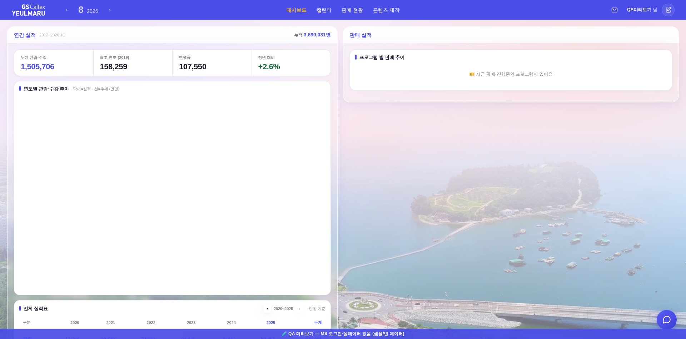
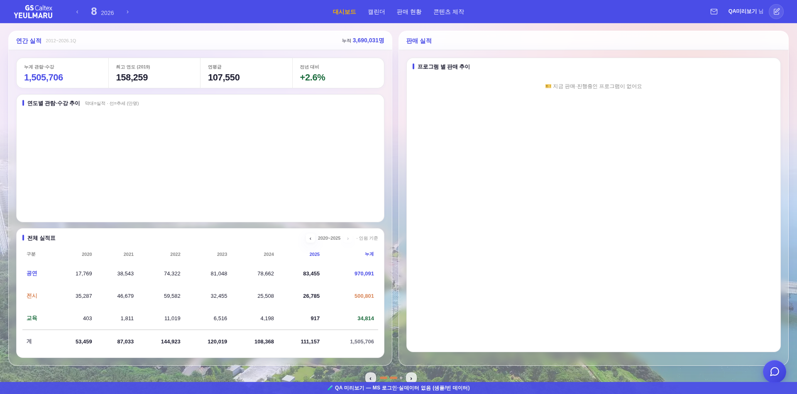

#yrm-chart는 항상 최대치 560px로 태어나고, 그걸 뷰포트에 맞춰 줄이는 _bizFitViewport()는
Plotly CDN 스크립트가 도착한 뒤에야 처음 불렸다(호출부가 전 파일에 resize와 _bizEnsurePlotly 콜백 단 2곳).
그래서 대시보드는 뷰포트를 161~291px 넘기는 큰 상태로 먼저 뜨고, 스크립트가 도착하면 그때 접혔다.
#521·#524가 잡은 「배율 튐」과는 다른 종류 — 폭은 전 구간 불변이고 세로 리플로우다.


| 창 | 전: 앱 노출 시점 | 전: 축소 시점 | 전: 큰 상태 지속 | 후: 앱 노출 시점 크기 |
|---|---|---|---|---|
| 2560×1080 | t=840ms · 보드 1141 · 차트 560 | t=1505ms → 980 / 399 | 665ms | t=848ms · 980 / 399 (확정) |
| 1920×950 | t=836ms · 보드 1141 · 차트 560 | t=1441ms → 850 / 269 | 605ms | t=834ms · 850 / 269 (확정) |
| 2048×784 (브라우저 125%) | t=869ms · 보드 911 · 차트 448 | t=1519ms → 692 / 229 | 650ms | t=858ms · 692 / 229 (확정) |
커튼(로그인 카드 리프트 640ms) 동안 #app은 display:none이라, 그 사이 도착한 Plotly의 fit 호출이
rail.offsetParent===null로 즉시 return하며 헛돌았다(재호출 훅 없음). 그래서 차트가 560px로 영구 고정되고,
사용자가 창을 건드리는 순간에야 resize 훅이 한 번에 접었다.
| 창 | 전 | 후 |
|---|---|---|
| 2560×1080 | 보드 1141 · 차트 560 · 문서 1241 영구(축소 0회) | t=870ms 보드 980 · 차트 399 · 문서 1080 |
| 1920×950 | 보드 1141 · 차트 560 · 문서 1241 영구(축소 0회) | t=846ms 보드 850 · 차트 269 · 문서 950 |
| # | 위치 | 내용 | 담당 경로 |
|---|---|---|---|
| F1 | _yrmRender — _yrmTable(); 다음 | try{_bizFitViewport();}catch(_e){} | 마크업 직후 = Plotly 대기 전에 최종 높이 확정(F5 새로고침·세션복원·재렌더) |
| F2 | _appEnterStagger — void appEl.offsetHeight; 다음 | try{if(typeof _bizFitViewport==='function')_bizFitViewport();}catch(_e){} | 커튼이 걷혀 앱이 보이는 첫 순간 재확정(로그인 연출 경로 ①②) |
안전성 — _bizFitViewport는 캘린더 모드·레일 숨김·차트 없음을 이미 조기 return하고, 내부 Plotly.relayout은
if(window.Plotly&&…) 가드가 있어 Plotly 없이 선호출해도 예외가 없다. setH의 2px 데드밴드로 멱등이라 F1·F2 중복 호출은 no-op.
높이 계산은 _bizZ()로 디자인 단위 환산 → #524 줌 상쇄와 좌표계 충돌 없음.
| 조건 | 기대 | 실측(후) |
|---|---|---|
| 2560×1329 (높은 창 — 원래 무증상) | 차트 560 유지·축소 없음 | 보드 1141 · 차트 560 · 문서 1329 — 무변 |
| 브라우저 125% (2048×784 / outer 2560) | #524 줌 상쇄 유지 | zoom 0.8 t=79ms 유지 · 첫 프레임부터 확정 크기 |
| 후보 | 기각 사유(실측) |
|---|---|
| 웹폰트 FOUT | 웜캐시 변화 0 · 콜드에서도 보드 1141→1122(−1.7%) · 문서·차트 높이 불변 |
| 레일 지연 렌더로 좌 보드가 전폭→절반 | 폭이 첫 페인트~종료까지 전 프레임 동일(1280/1280/1245) — #sales-rail{width:50%}+class="biz-mode" 하드코딩이 이미 방어 |
| 서비스워커 구버전 선노출 | 변화 방향이 반대(+6.5%)이고 1회 로드 후 자연 치유 |
| outerWidth 미확정 / innerWidth≤1200 게이트 | 실브라우저에서 outerWidth는 t=0.4ms에 확정 · 2560창은 게이트 도달 불가 · 변화 0건 |
| 로그인 연출이 큰 상태를 늘린다 | 오히려 640ms를 가려준다(Plotly 1200ms: 연출O 681ms vs 연출X 1227ms) |
check_design ✓(raw hex 1605/1605 무변·:root 2/0·신규 토큰 0) · check_refs ✓ · smoke 로그인 ✓(JS 회귀 0)
_yrDrawChart의 layout.height:(_m?560:410) 리터럴은 그대로 뒀다 — 같은 동기 블록에서 뒤이어
_bizFitViewport가 relayout하므로 페인트 경계가 없어 현재 무증상이고, 손대면 디자인 값 변경 위험이 이득보다 크다.